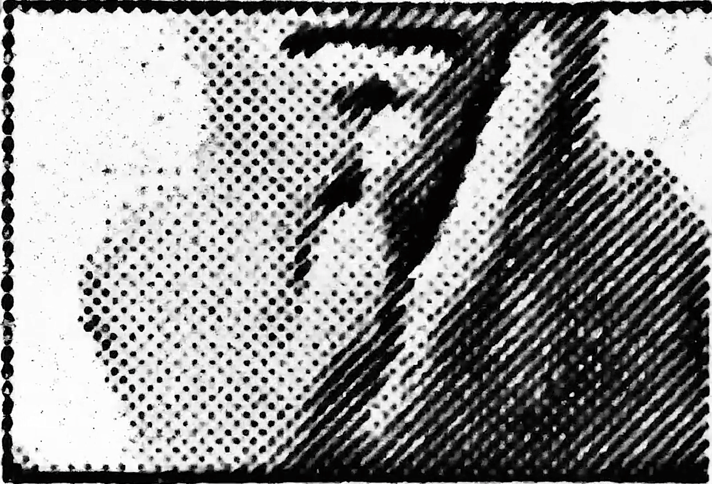

THE PERFECT HUMAN
A film remake of Jørgen Leth's The Perfect Human with moving images generated with machine learning, which was later transformed into analog form, reexamining and questioning the contested notion of perfect human.

GITHUB ⏎
DESCRIPTION
Inspired by Jørgen Leth's Black and White cult classic The Perfect Human (1968) which raises many simple yet philosophical questions about who the perfect human is, what it means to be human, or perfect, this work applies unsupervised machine learning and experimental filmmaking techniques to reexamine and question the contested notion of perfection in the eyes of artificial intelligence. Later the remake of the computer-generated moving images are transformed from digital recreation to an analog artifact of transparencies which completed the cycles from analog film to digital video and back to 16mm format, from motion pictures to still images, and then latent-space interpolation, from a proxy of human memories to the machine learning construct.
PROCESS
I intend to challenge the concept of the perfect human with the intervention of GAN, in this case,
StyleGAN2, which is commonly used for producing unlimited number of portraits of fake human faces.
After pre-process the image dataset which is composed of every 12 frames per second from a 360p
low-resolution video found on YouTube, I loaded 9,408 images and started training that lasted 16h
33m 12s.
The video above shows the original frames from the film undergoing 709 iternations of training over time. Looking at these previews, I cannot help but think about how the placement of images resembles the filmstrips, and each of the frames is isolated yet interconnected.
VIDEO PROJECTION
For the first version of the installation, I chose to present it through video installation because of the fact that projection will ease the crispness of pixels and blur the images with ambiguity. Also historically, 1960s has been the years where there were a lot of "educational videos" being produced with similar aestheics.

DIGITAL-ANALOG CONVERSION


FILM INSTALLATION

EXHBITION HISTORY
The video installation version of the work with lightbox was selected as part of the Digital + Media
Biennial at Sol Koffler Gallery which later traveled to Boston CyberArts.
The digital transfer from 16mm film has been chosen has official selection in Hallucinea Film
Festival in Paris, France, and it has been part of an online exhibition Making Moves at Gallery 263,
Cambridge, MA.
The work was also featured in The College Hill Independent*
newspaper on Feb 18, 2022 and will soon be published in Analog Cookbook
Issue #6 including an artist interview.